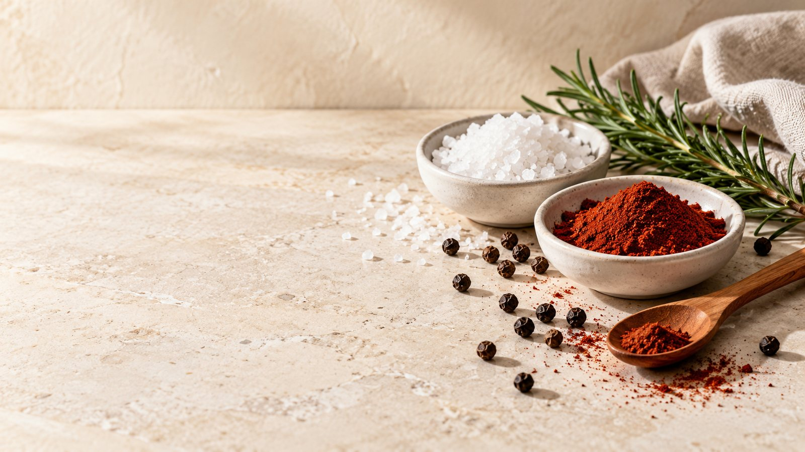
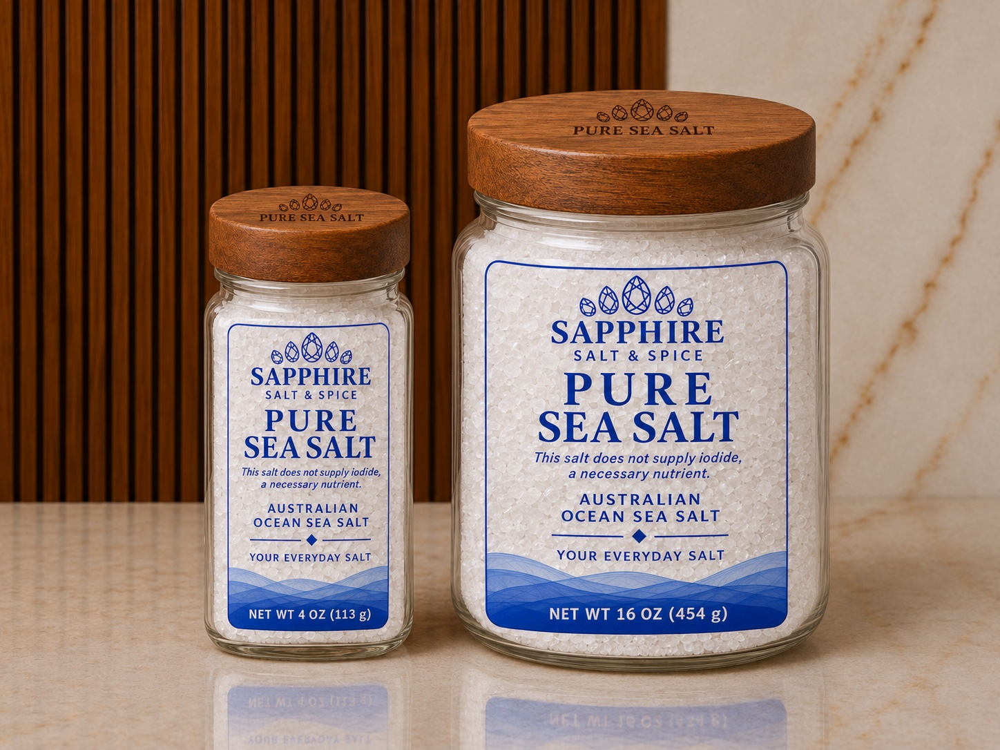

We believe every ingredient should have a clear place in the blend. Every jar starts with the same sea salt and adds a few you can pronounce — here’s each one, where it comes from, and why it’s there.


Harvested from the cold coastal waters of Australia and chosen for its clean taste, natural purity and smooth culinary character. It’s the first ingredient in every jar — and the only one in Pure Salt.
The full story Shop Pure Salt